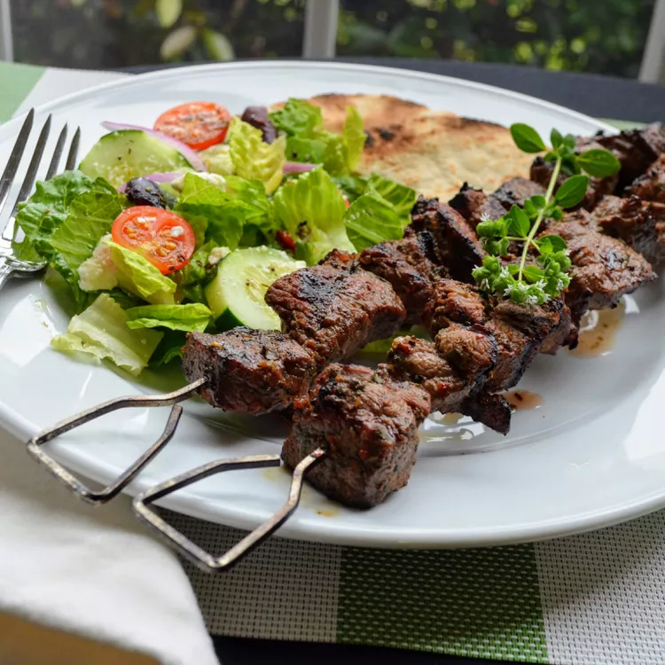

Lamb Souvlaki

Description
Lamb souvlaki with marinated pieces of lamb, threaded on skewers, and char-grilled to perfection.
I like to serve these with rosemary garlic roasted potatoes, a Greek salad, and pita bread.
Ingredients
You can create this recipe with the following ingredients:
- 1/3 cup olive oil
- 1/2 tablespoons freshly squeezed lemon juice
- 1/2 tablespoons red wine vinegar
- 1/2 tablespoons chopped fresh oregano
- 2 cloves garlic, minced
- 1/2 teaspoon salt
- 1/4 teaspoon ground black pepper
- 1/2 pounds boneless leg of lamb, trimmed of all fat and cut
into 1 inch cubes
Steps
Now that we are done with recipes, we can finally begin making the actual dish!
Follow these steps.
- Whisk olive oil, lemon juice, red wine vinegar, oregano, garlic, salt, and pepper together in a medium bowl.
Add cubed lamb and stir until lamb is coated with marinade. Cover and refrigerate 3 hours, or overnight.
- Preheat an outdoor grill for medium-high heat and lightly oil the grate.
- Thread marinated lamb onto skewers, reserving any remaining marinade.
Grill skewers until desired doneness, 10 to 12 minutes, basting with the reserved marinade and turning occasionally for even cooking.
Now you have a tasty lamb souvlaki if you followed the recipe step by step.
Home